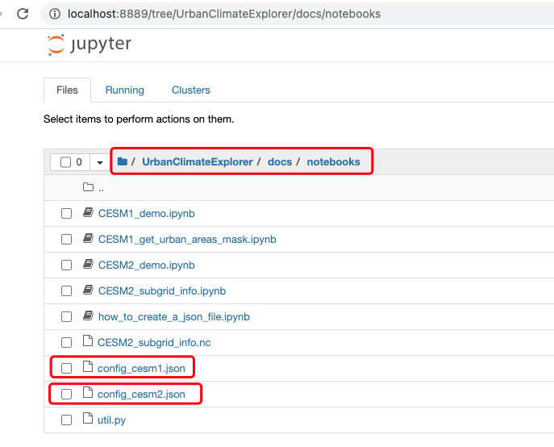
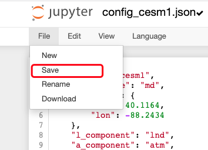
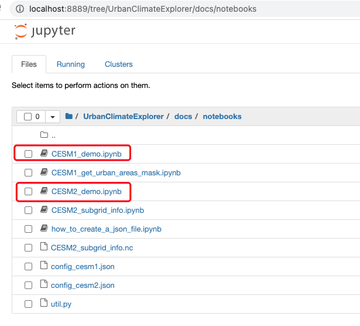

Setup
Step 1: Follow Install and Run to launch a jupyter notebook locally or using HPC.
Step 2: Open
config_cesm1.jsonorconfig_cesm2.json.
Step 3: If you are not familiar with CESM1 or CESM2, you can just edit
city_locandtime_startandtime_end.Step 4: Save the JSON file

Step 5: Open
CESM1_demo.ipynborCESM2_demo.ipynb, depends on which JSON you have edited. Now you are all set!